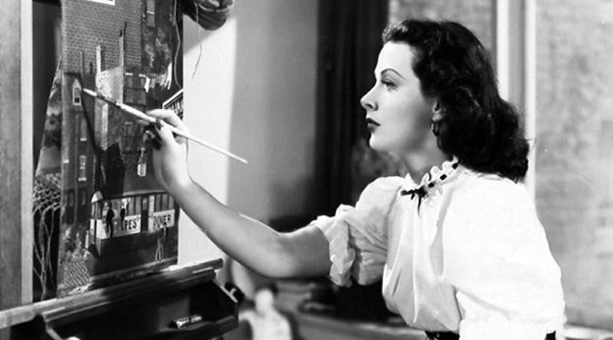

1914-2000
"Hope and curiosity about the future seemed better than guarantees. That's the way I was. The unknown was always so attractive to me... and still is."
Hedy Lamarr was an Austrian-American actress and inventor who pioneered the technology that would one day form the basis for today’s WiFi, GPS, and Bluetooth communication systems. As a natural beauty seen widely on the big screen in films like Samson and Delilah and White Cargo, society has long ignored her inventive genius.
Lamarr was originally Hedwig Eva Kiesler, born in Vienna, Austria on November 9th, 1914 into a well-to-do Jewish family. An only child, Lamarr received a great deal of attention from her father, a bank director and curious man, who inspired her to look at the world with open eyes. He would often take her for long walks where he would discuss the inner-workings of different machines, like the printing press or street cars. These conversations guided Lamarr’s thinking and at only 5 years of age, she could be found taking apart and reassembling her music box to understand how the machine operated. Meanwhile, Lamarr’s mother was a concert pianist and introduced her to the arts, placing her in both ballet and piano lessons from a young age.
In 1940 Lamarr met George Antheil at a dinner party. Antheil was another quirky yet clever force to be reckoned with. Known for his writing, film scores, and experimental music compositions, he shared the same inventive spirit as Lamarr. She and Antheil talked about a variety of topics but of their greatest concerns was the looming war. Antheil recalled, “Hedy said that she did not feel very comfortable, sitting there in Hollywood and making lots of money when things were in such a state.” After her marriage to Mandl, she had knowledge on munitions and various weaponry that would prove beneficial. And so, Lamarr and Antheil began to tinker with ideas to combat the axis powers.
The two came up with an extraordinary new communication system used with the intention of guiding torpedoes to their targets in war. The system involved the use of “frequency hopping” amongst radio waves, with both transmitter and receiver hopping to new frequencies together. Doing so prevented the interception of the radio waves, thereby allowing the torpedo to find its intended target. After its creation, Lamarr and Antheil sought a patent and military support for the invention. While awarded U.S. Patent No. 2,292,387 in August of 1942, the Navy decided against the implementation of the new system. The rejection led Lamarr to instead support the war efforts with her celebrity by selling war bonds. Happy in her adopted country, she became an American citizen in April 1953.
Meanwhile, Lamarr’s patent expired before she ever saw a penny from it. While she continued to accumulate credits in films until 1958, her inventive genius was yet to be recognized by the public. It wasn’t until Lamarr’s later years that she received any awards for her invention. The Electronic Frontier Foundation jointly awarded Lamarr and Antheil with their Pioneer Award in 1997. Lamarr also became the first woman to receive the Invention Convention’s Bulbie Gnass Spirit of Achievement Award. Although she died in 2000, Lamarr was inducted into the National Inventors Hall of Fame for the development of her frequency hopping technology in 2014. Such achievement has led Lamarr to be dubbed “the mother of Wi-Fi” and other wireless communications like GPS and Bluetooth.